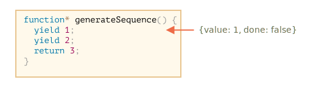
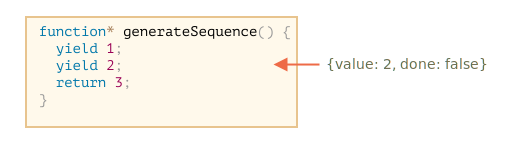

Regular functions return only one, single value (or nothing).
Generators can return (“yield”) multiple values, one after another, on-demand. They work great with iterables, allowing to create data streams with ease.
To create a generator, we need a special syntax construct: function*, so-called “generator function”.
It looks like this:
Generator functions behave differently from regular ones. When such function is called, it doesn’t run its code. Instead it returns a special object, called “generator object”, to manage the execution.
Here, take a look:
```js run function* generateSequence() { yield 1; yield 2; return 3; }
// “generator function” creates “generator object” let generator = generateSequence(); ! alert(generator); // [object Generator] /! ```
The function code execution hasn’t started yet:
The main method of a generator is next(). When called, it runs the execution until the nearest yield <value> statement (value can be omitted, then it’s undefined). Then the function execution pauses, and the yielded value is returned to the outer code.
The result of next() is always an object with two properties: - value: the yielded value. - done: true if the function code has finished, otherwise false.
For instance, here we create the generator and get its first yielded value:
```js run function* generateSequence() { yield 1; yield 2; return 3; }
let generator = generateSequence();
! let one = generator.next(); /!
alert(JSON.stringify(one)); // {value: 1, done: false} ```
As of now, we got the first value only, and the function execution is on the second line:

Let’s call generator.next() again. It resumes the code execution and returns the next yield:

And, if we call it a third time, the execution reaches the return statement that finishes the function:

Now the generator is done. We should see it from done:true and process value:3 as the final result.
New calls to generator.next() don’t make sense any more. If we do them, they return the same object: {done: true}.
``smart header="function* f(…)orfunction *f(…)`?" Both syntaxes are correct.
But usually the first syntax is preferred, as the star * denotes that it’s a generator function, it describes the kind, not the name, so it should stick with the function keyword. ```
As you probably already guessed looking at the next() method, generators are iterable.
We can loop over their values using for..of:
```js run function* generateSequence() { yield 1; yield 2; return 3; }
let generator = generateSequence();
for(let value of generator) { alert(value); // 1, then 2 } ```
Looks a lot nicer than calling .next().value, right?
…But please note: the example above shows 1, then 2, and that’s all. It doesn’t show 3!
It’s because for..of iteration ignores the last value, when done: true. So, if we want all results to be shown by for..of, we must return them with yield:
```js run function* generateSequence() { yield 1; yield 2; ! yield 3; /! }
let generator = generateSequence();
for(let value of generator) { alert(value); // 1, then 2, then 3 } ```
As generators are iterable, we can call all related functionality, e.g. the spread syntax ...:
```js run function* generateSequence() { yield 1; yield 2; yield 3; }
let sequence = [0, …generateSequence()];
alert(sequence); // 0, 1, 2, 3 ```
In the code above, ...generateSequence() turns the iterable generator object into an array of items (read more about the spread syntax in the chapter )
Some time ago, in the chapter we created an iterable range object that returns values from..to.
Here, let’s remember the code:
```js run let range = { from: 1, to: 5,
// for..of range calls this method once in the very beginning Symbol.iterator { // …it returns the iterator object: // onward, for..of works only with that object, asking it for next values return { current: this.from, last: this.to,
// next() is called on each iteration by the for..of loop
next() {
// it should return the value as an object {done:.., value :...}
if (this.current <= this.last) {
return { done: false, value: this.current++ };
} else {
return { done: true };
}
}
};} };
// iteration over range returns numbers from range.from to range.to alert([…range]); // 1,2,3,4,5 ```
We can use a generator function for iteration by providing it as Symbol.iterator.
Here’s the same range, but much more compact:
```js run let range = { from: 1, to: 5,
Symbol.iterator { // a shorthand for [Symbol.iterator]: function() for(let value = this.from; value <= this.to; value++) { yield value; } } };
alert( […range] ); // 1,2,3,4,5 ```
That works, because range[Symbol.iterator]() now returns a generator, and generator methods are exactly what for..of expects: - it has a .next() method - that returns values in the form {value: ..., done: true/false}
That’s not a coincidence, of course. Generators were added to JavaScript language with iterators in mind, to implement them easily.
The variant with a generator is much more concise than the original iterable code of range, and keeps the same functionality.
```smart header=“Generators may generate values forever” In the examples above we generated finite sequences, but we can also make a generator that yields values forever. For instance, an unending sequence of pseudo-random numbers.
That surely would require a break (or return) in for..of over such generator. Otherwise, the loop would repeat forever and hang. ```
Generator composition is a special feature of generators that allows to transparently “embed” generators in each other.
For instance, we have a function that generates a sequence of numbers:
Now we’d like to reuse it to generate a more complex sequence: - first, digits 0..9 (with character codes 48..57), - followed by uppercase alphabet letters A..Z (character codes 65..90) - followed by lowercase alphabet letters a..z (character codes 97..122)
We can use this sequence e.g. to create passwords by selecting characters from it (could add syntax characters as well), but let’s generate it first.
In a regular function, to combine results from multiple other functions, we call them, store the results, and then join at the end.
For generators, there’s a special yield* syntax to “embed” (compose) one generator into another.
The composed generator:
```js run function* generateSequence(start, end) { for (let i = start; i <= end; i++) yield i; }
function* generatePasswordCodes() {
! // 0..9 yield* generateSequence(48, 57);
// A..Z yield* generateSequence(65, 90);
// a..z yield* generateSequence(97, 122); /!
}
let str = ’’;
for(let code of generatePasswordCodes()) { str += String.fromCharCode(code); }
alert(str); // 0..9A..Za..z ```
The yield* directive delegates the execution to another generator. This term means that yield* gen iterates over the generator gen and transparently forwards its yields outside. As if the values were yielded by the outer generator.
The result is the same as if we inlined the code from nested generators:
```js run function* generateSequence(start, end) { for (let i = start; i <= end; i++) yield i; }
function* generateAlphaNum() {
! // yield* generateSequence(48, 57); for (let i = 48; i <= 57; i++) yield i;
// yield* generateSequence(65, 90); for (let i = 65; i <= 90; i++) yield i;
// yield* generateSequence(97, 122); for (let i = 97; i <= 122; i++) yield i; /!
}
let str = ’’;
for(let code of generateAlphaNum()) { str += String.fromCharCode(code); }
alert(str); // 0..9A..Za..z ```
A generator composition is a natural way to insert a flow of one generator into another. It doesn’t use extra memory to store intermediate results.
Until this moment, generators were similar to iterable objects, with a special syntax to generate values. But in fact they are much more powerful and flexible.
That’s because yield is a two-way street: it not only returns the result to the outside, but also can pass the value inside the generator.
To do so, we should call generator.next(arg), with an argument. That argument becomes the result of yield.
Let’s see an example:
```js run function* gen() { ! // Pass a question to the outer code and wait for an answer let result = yield “2 + 2 = ?”; // () /!*
alert(result); }
let generator = gen();
let question = generator.next().value; // <– yield returns the value
generator.next(4); // –> pass the result into the generator
```

generator.next() should be always made without an argument (the argument is ignored if passed). It starts the execution and returns the result of the first yield "2+2=?". At this point the generator pauses the execution, while staying on the line (*).yield gets into the question variable in the calling code.generator.next(4), the generator resumes, and 4 gets in as the result: let result = 4.Please note, the outer code does not have to immediately call next(4). It may take time. That’s not a problem: the generator will wait.
For instance:
As we can see, unlike regular functions, a generator and the calling code can exchange results by passing values in next/yield.
To make things more obvious, here’s another example, with more calls:
```js run function* gen() { let ask1 = yield “2 + 2 = ?”;
alert(ask1); // 4
let ask2 = yield “3 * 3 = ?”
alert(ask2); // 9 }
let generator = gen();
alert( generator.next().value ); // “2 + 2 = ?”
alert( generator.next(4).value ); // “3 * 3 = ?”
alert( generator.next(9).done ); // true ```
The execution picture:

.next() starts the execution… It reaches the first yield..next(4) passes 4 back to the generator as the result of the first yield, and resumes the execution.yield, that becomes the result of the generator call.next(9) passes 9 into the generator as the result of the second yield and resumes the execution that reaches the end of the function, so done: true.It’s like a “ping-pong” game. Each next(value) (excluding the first one) passes a value into the generator, that becomes the result of the current yield, and then gets back the result of the next yield.
As we observed in the examples above, the outer code may pass a value into the generator, as the result of yield.
…But it can also initiate (throw) an error there. That’s natural, as an error is a kind of result.
To pass an error into a yield, we should call generator.throw(err). In that case, the err is thrown in the line with that yield.
For instance, here the yield of "2 + 2 = ?" leads to an error:
```js run function* gen() { try { let result = yield “2 + 2 = ?”; // (1)
alert("The execution does not reach here, because the exception is thrown above");} catch(e) { alert(e); // shows the error } }
let generator = gen();
let question = generator.next().value;
! generator.throw(new Error(“The answer is not found in my database”)); // (2) /! ```
The error, thrown into the generator at line (2) leads to an exception in line (1) with yield. In the example above, try..catch catches it and shows it.
If we don’t catch it, then just like any exception, it “falls out” the generator into the calling code.
The current line of the calling code is the line with generator.throw, labelled as (2). So we can catch it here, like this:
```js run function* generate() { let result = yield “2 + 2 = ?”; // Error in this line }
let generator = generate();
let question = generator.next().value;
! try { generator.throw(new Error(“The answer is not found in my database”)); } catch(e) { alert(e); // shows the error } /! ```
If we don’t catch the error there, then, as usual, it falls through to the outer calling code (if any) and, if uncaught, kills the script.
generator.return(value) finishes the generator execution and return the given value.
function* gen() {
yield 1;
yield 2;
yield 3;
}
const g = gen();
g.next(); // { value: 1, done: false }
g.return('foo'); // { value: "foo", done: true }
g.next(); // { value: undefined, done: true }If we again use generator.return() in a completed generator, it will return that value again (MDN).
Often we don’t use it, as most of time we want to get all returning values, but it can be useful when we want to stop generator in a specific condition.
function* f(…) {…}.yield operator.next/yield calls.In modern JavaScript, generators are rarely used. But sometimes they come in handy, because the ability of a function to exchange data with the calling code during the execution is quite unique. And, surely, they are great for making iterable objects.
Also, in the next chapter we’ll learn async generators, which are used to read streams of asynchronously generated data (e.g paginated fetches over a network) in for await ... of loops.
In web-programming we often work with streamed data, so that’s another very important use case.